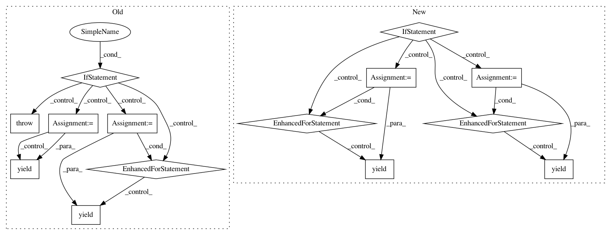

52796475005cb8828c73dfbb97ba9820667c9d41,cnvlib/coverage.py,,interval_coverages_pileup,#Any#Any#Any#Any#,147
Before Change
def interval_coverages_pileup(bed_fname, bam_fname, min_mapq, procs=1):
Calculate log2 coverages in the BAM file at each interval.
logging.info("Processing reads in %s", os.path.basename(bam_fname))
if procs == 1:
for chrom, start, end, gene, count, depth in bedcov(bed_fname, bam_fname,
min_mapq):
yield [count,
(chrom, start, end, gene,
math.log(depth, 2) if depth else NULL_LOG2_COVERAGE, depth)]
raise StopIteration
with futures.ProcessPoolExecutor(procs) as pool:
for biter in pool.map(_bedcov, ((bed_chrom, bam_fname, min_mapq) for
bed_chrom in to_chunks(bed_fname))):
for chrom, start, end, gene, count, depth in biter:
yield [count,
(chrom, start, end, gene,
math.log(depth, 2) if depth else NULL_LOG2_COVERAGE, depth)]
rm(bed_chrom)
def _bedcov(args):
Wrapper for parallel.
return list(bedcov(*args))
After Change
def interval_coverages_pileup(bed_fname, bam_fname, min_mapq, procs=1):
Calculate log2 coverages in the BAM file at each interval.
logging.info("Processing reads in %s", os.path.basename(bam_fname))
if procs == 1:
for count, row in bedcov(bed_fname, bam_fname, min_mapq):
yield [count, row]
else:
with futures.ProcessPoolExecutor(procs) as pool:
args_iter = ((bed_chunk, bam_fname, min_mapq)
for bed_chunk in to_chunks(bed_fname))
for bed_chunk_fname, biter in pool.map(_bedcov, args_iter):
for count, row in biter:
yield [count, row]
rm(bed_chunk_fname)
def _bedcov(args):
Wrapper for parallel.
bed_fname = args[0]
return bed_fname, list(bedcov(*args))
In pattern: SUPERPATTERN
Frequency: 3
Non-data size: 14
Instances
Project Name: etal/cnvkit
Commit Name: 52796475005cb8828c73dfbb97ba9820667c9d41
Time: 2016-08-28
Author: eric.talevich@gmail.com
File Name: cnvlib/coverage.py
Class Name:
Method Name: interval_coverages_pileup
Project Name: pantsbuild/pants
Commit Name: 91cdde2ef79e87a9cb0d80cb55769bc23dc271cc
Time: 2014-08-19
Author: john.sirois@gmail.com
File Name: src/python/pants/backend/jvm/tasks/dependencies.py
Class Name: Dependencies
Method Name: console_output
Project Name: pantsbuild/pants
Commit Name: 991b6233b442369be2310ca58fbd7c4b93f72c89
Time: 2014-12-23
Author: tinystatemachine@gmail.com
File Name: src/python/pants/backend/core/tasks/what_changed.py
Class Name: WhatChanged
Method Name: console_output